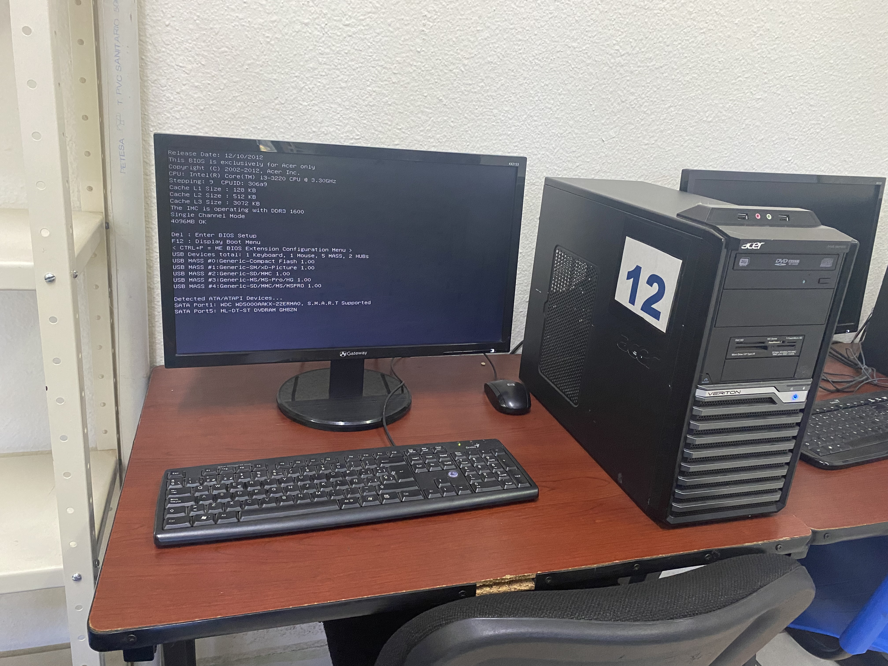
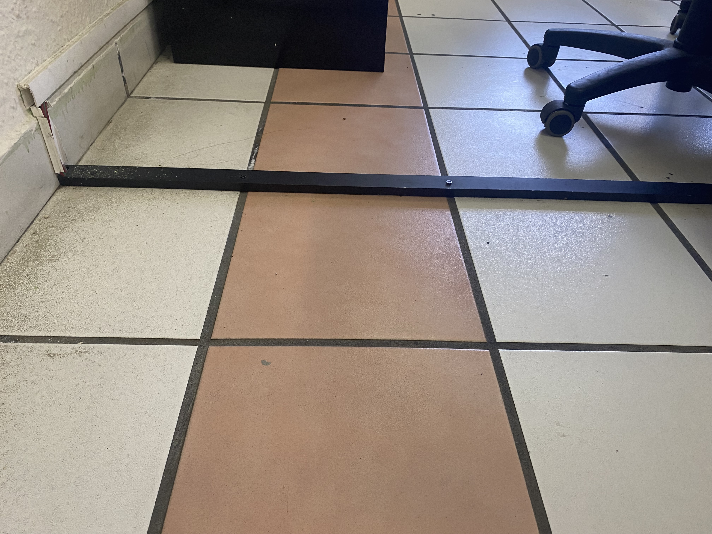
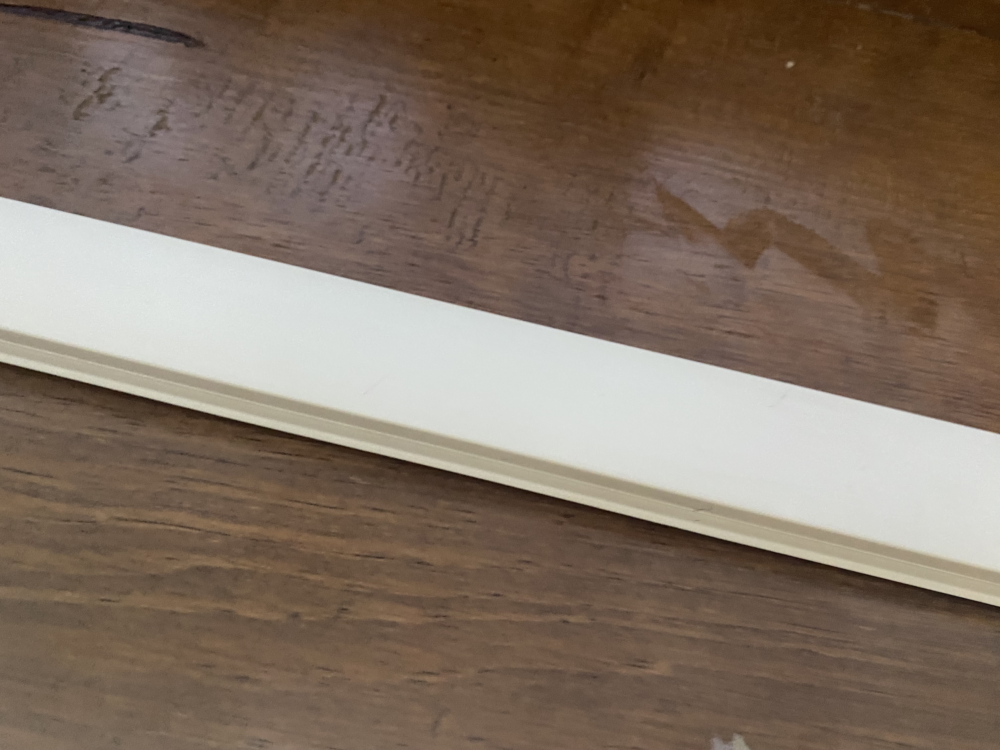
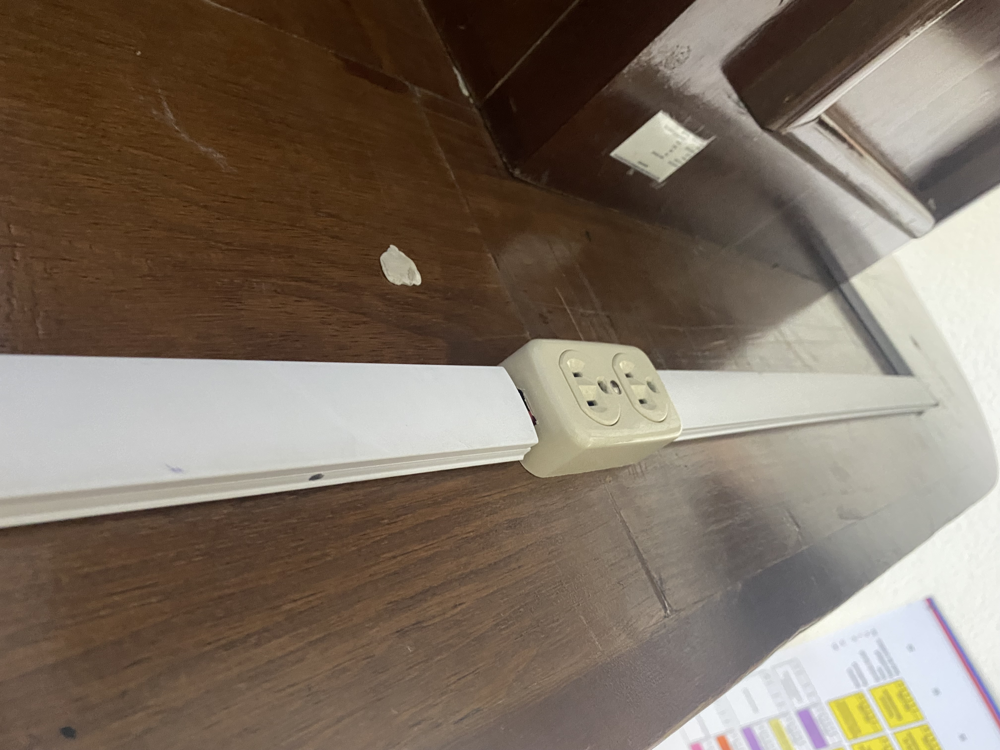
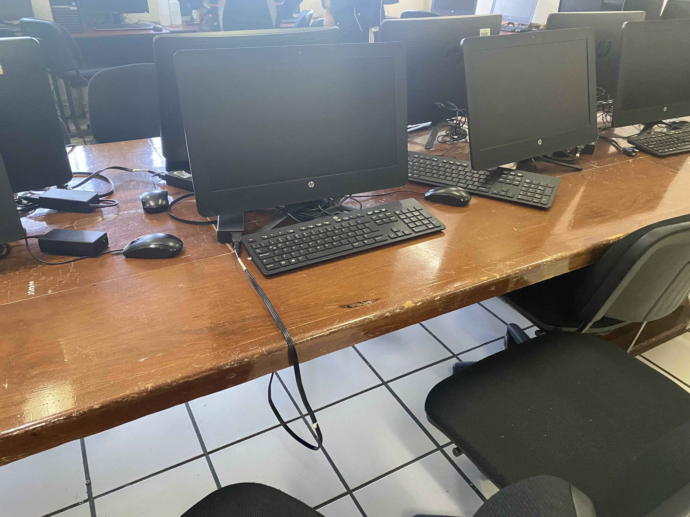
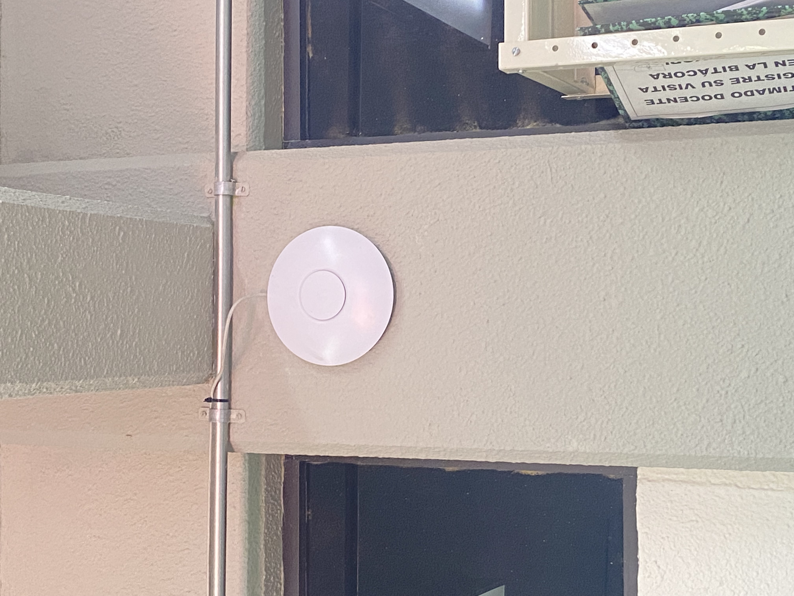
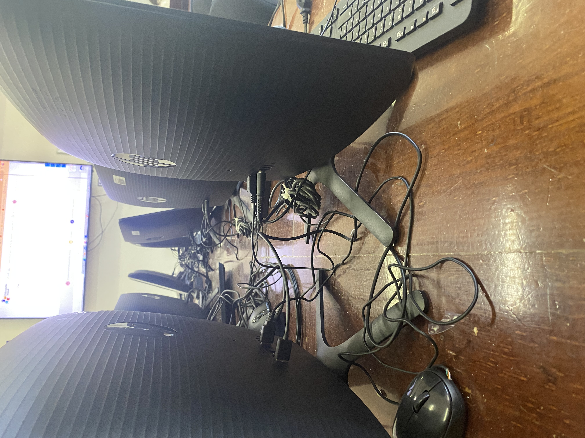
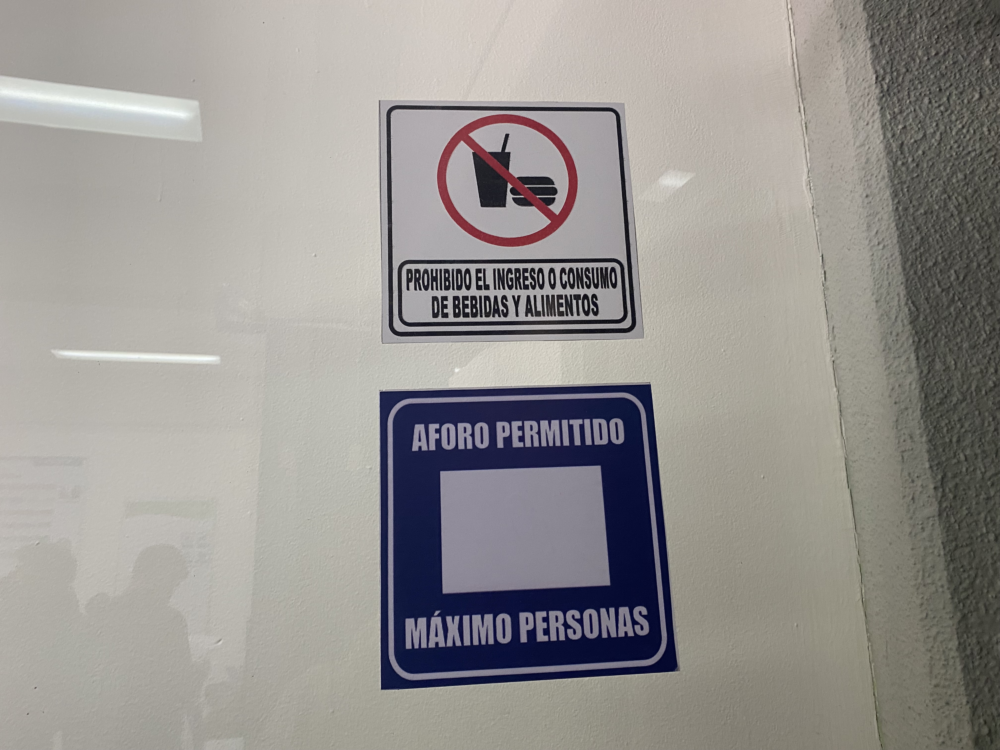

| NO | descripcion de las oportunidades de mejora o no conformidades | documento de referencia | clasificacion de observacion (CN / NC) |
|---|---|---|---|
| 1 |
De acuerdo a comentarios por parte de alumnos, en ocaciones algunos equipos de computo se encuentran desconectados de la corriente electrica se recomienda que cada equipo este conectado a un regulador |
Norma ISO IEEE | CN |
| 2 |
Según lo visto el cableado de algunos equipos de computo no estan dentro de canaletas por lo cual los cables no estan siendo protegidos, y no asegura una fácil distribución. | Norma ISO 9000 |
NC |
| 3 |
Conforme a lo analizado en sala se recomienda poner señaleticas de peligro de alto voltaje en los centro de carga | Normas NOM | CN |
|  se identifico un buen funcionamiento en el equipo de computo |
 se identifico cableado en el piso correctamente dentro de canaletas |
|  se identifico cableado en las paredes correctamente dentro de canaletas |
 se identificaron tomas de corriente colocadas en lugares estrategicos |
|  se identificoque el aula cuenta con los equipos suficientes |
 se identifico la correcta instalacion de una alarma contra incendios |
|  se ifentico una mala organizacion de cableado de los equipos de computo |
 se identifo la correcta colocacion de señaleticas de advertencias |